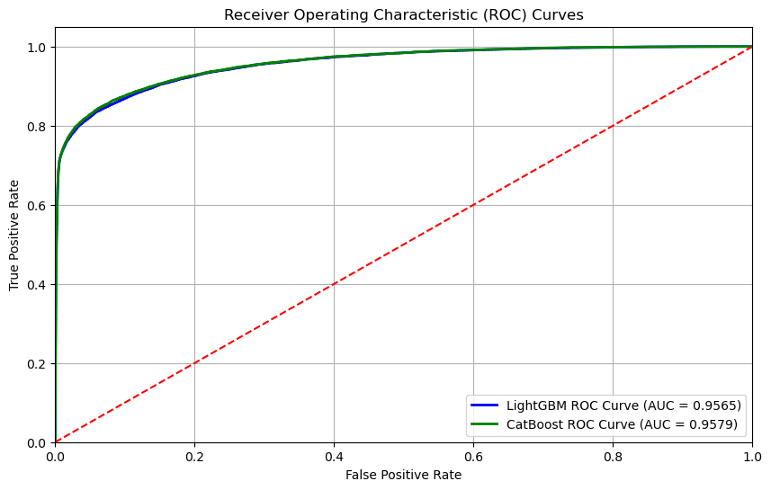
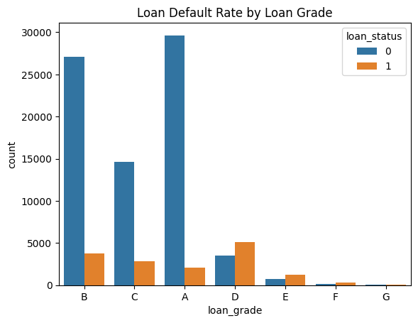
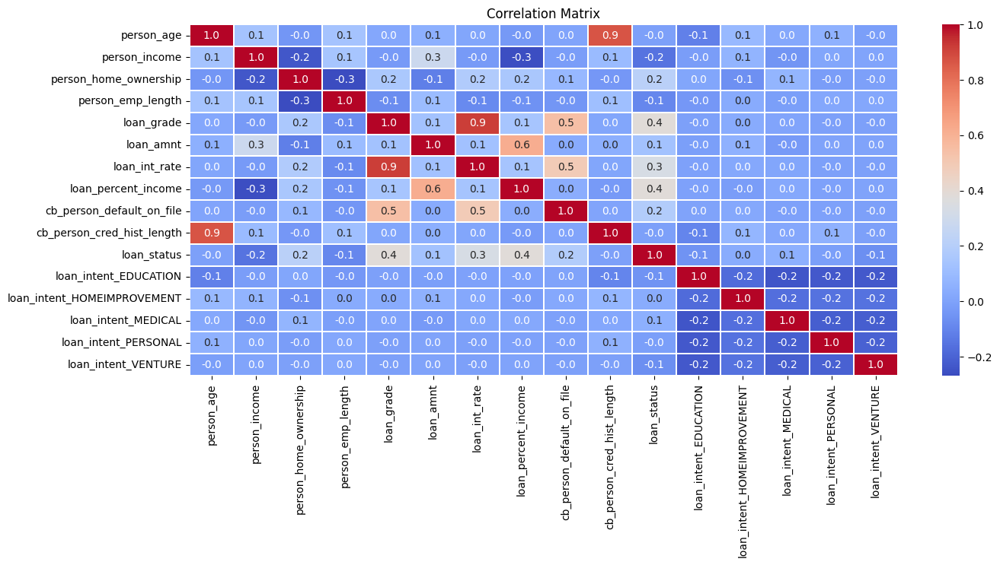
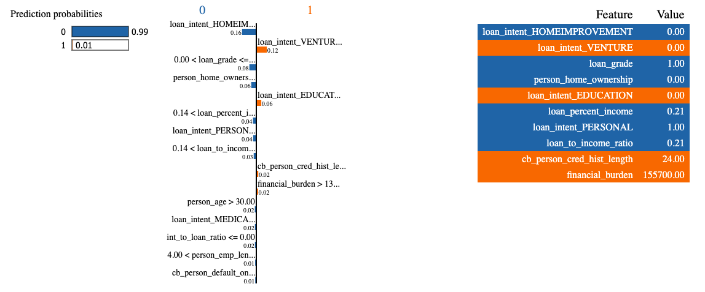
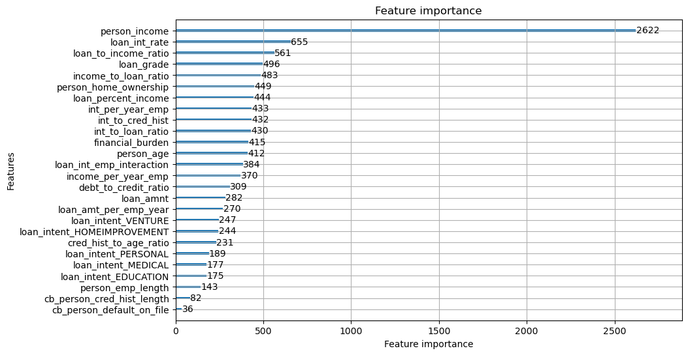

Responsible AI Audit: Loan Approval Prediction
Tools & Methods: Python (pandas, numpy, scikit-learn, LightGBM, CatBoost), Cross-Validation, ROC-AUC, LIME, Fairness Slices
Project Summary
Built a production-style pipeline to predict loan default risk on ~91k records. The workflow covers EDA → feature engineering → modeling (5-fold stratified) → fairness checks → local explanation. Tuned CatBoost and LightGBM both reached AUC ≈ 0.958 on validation.
Dataset
- Rows/Cols: ~91,226 × 26 after joins/encoding.
- Predictors: demographics (age, income, employment), loan features (amount, intent, grade, rate, percent income), credit history (prior default flag, history length).
- Target:
loan_status(1 = default, 0 = non-default).
How I Did It
- EDA: distributions (age, income, rate), stacked bars (intent & home ownership vs default), correlation heatmap.
- Feature engineering: ratios for burden/capacity (loan-to-income, debt-to-credit, interest-to-loan), interaction (rate × employment), and per-year/per-employee normalizations.
- Modeling: LightGBM & CatBoost with Stratified 5-Fold, early stopping; tuned hyperparameters. Metric = ROC-AUC.
- Fairness & interpretability: subgroup metrics (accuracy/precision/recall/F1 by home ownership & grade), LIME local explanation, and a small-noise stability test.
Visuals
1) ROC Curves (Validation)

LightGBM AUC ≈ 0.9565; CatBoost AUC ≈ 0.9579 (5-fold stratified validation).
2) Default Rate by Loan Grade

Monotone pattern: grades E–G default more than A–C.
3) Correlation Heatmap (Engineered Features)

4) Why This Prediction? (Local Explanation)

LightGBM local explanation for a single validation sample. Bars show features pushing the prediction toward/away from default (e.g., higher
financial_burden and not having loan_intent_EDUCATION push toward default; loan_grade greater then 3 and higher loan_percent_income pushes away).Results
- Validation AUC: CatBoost ≈ 0.958; LightGBM ≈ 0.957. Blended probabilities for test predictions.
- Top drivers (importance): person_income, loan_int_rate, loan_to_income_ratio, loan_grade, loan_percent_income.
- Stability: adding σ≈1% Gaussian noise to inputs reduced accuracy by <1% (both models robust).
- Fairness highlights: subgroup recall varies across home ownership and loan grade—riskier groups see higher recall; some low-risk/under-represented groups show lower recall (potential under-approval).
Feature Importance

Global drivers: income is dominant; interest rate, loan-to-income, and loan grade are key; percent income and credit history length also contribute.
Fairness Metrics by Home Ownership — CatBoost (expand)
| Metric | 2 | 0 | 3 | 1 |
|---|---|---|---|---|
| Accuracy | 0.986523 | 0.951469 | 0.942165 | 0.900000 |
| Precision | 0.756757 | 0.892308 | 0.944471 | 1.000000 |
| Recall | 0.823529 | 0.464000 | 0.822314 | 0.615385 |
| F1 Score | 0.788732 | 0.610526 | 0.879169 | 0.761905 |
Fairness Metrics by Home Ownership — LightGBM (expand)
| Metric | 2 | 0 | 3 | 1 |
|---|---|---|---|---|
| Accuracy | 0.985624 | 0.950551 | 0.941002 | 0.880000 |
| Precision | 0.736842 | 0.913333 | 0.952381 | 1.000000 |
| Recall | 0.823529 | 0.438400 | 0.809917 | 0.538462 |
| F1 Score | 0.777778 | 0.592432 | 0.875391 | 0.700000 |
Key Takeaways
- Accuracy vs equity: High AUC doesn’t guarantee fair outcomes—recall disparities suggest potential under-approval for low-risk, under-represented groups.
- Signals that matter: affordability signals—rate, income, loan-to-income—plus loan grade dominate risk prediction.
- Next steps: probability calibration; SHAP for global interpretability; re-weighting or constraint-based debiasing; human-in-the-loop review for borderline cases.